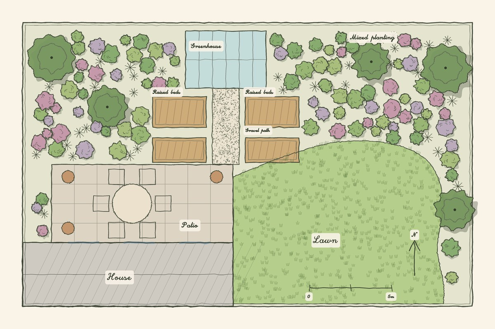
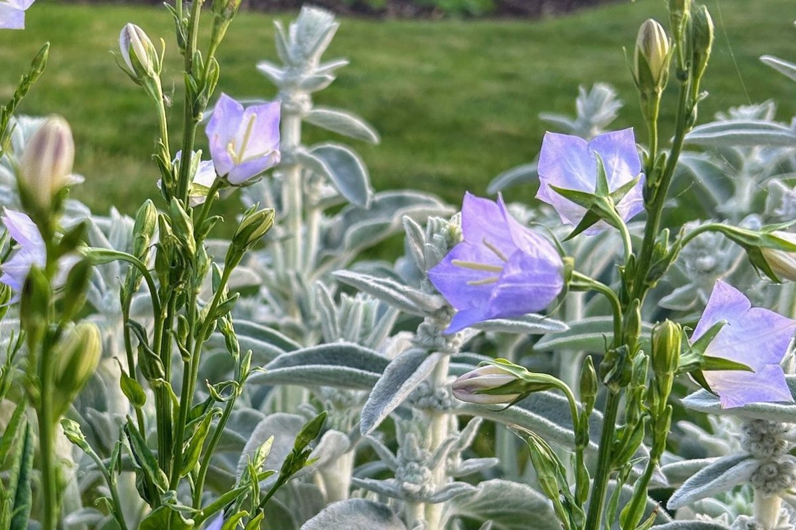
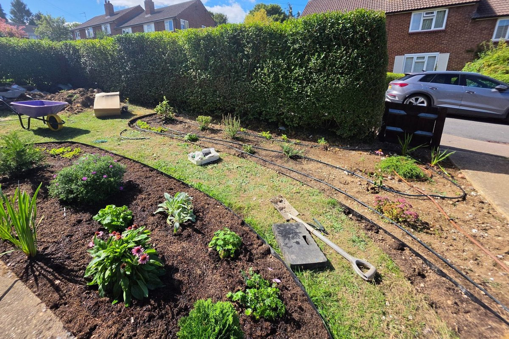
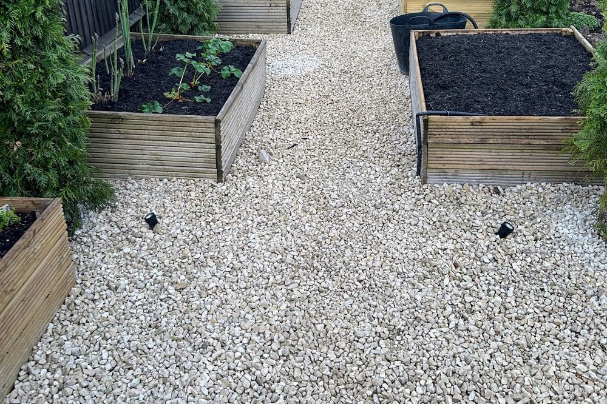

Garden Design
A full design for your garden that balances how it looks with how you will actually use it.
Beautifully considered gardens for homes across London, Hertfordshire and the surrounding areas. Whether you are starting with a blank space or reimagining one you already know, I design gardens that feel as good as they look and suit the way you live.
Every garden starts somewhere different: a blank plot, a tired lawn, or a single idea that needs shaping. Whatever you need, I can help you take care of it all.

A full design for your garden that balances how it looks with how you will actually use it.

I choose plants to suit your soil, your light and the care you want to give, and the planting is taken care of for you.

Drip systems planned and installed for you, watering at the roots and using far less water than a hosepipe.

The paths, patios and structure that hold a garden together, all taken care of to match the design.
A visit to your garden for honest, practical advice when you need direction before anything else.

I work directly with the site, its light, its soil and its existing planting, rather than starting from a fixed idea. Every project is walked, measured and talked through with you in person before I draw a single line.
More about meGet in touch to arrange a consultation. I work across London, Hertfordshire and the surrounding areas.
Get in touch